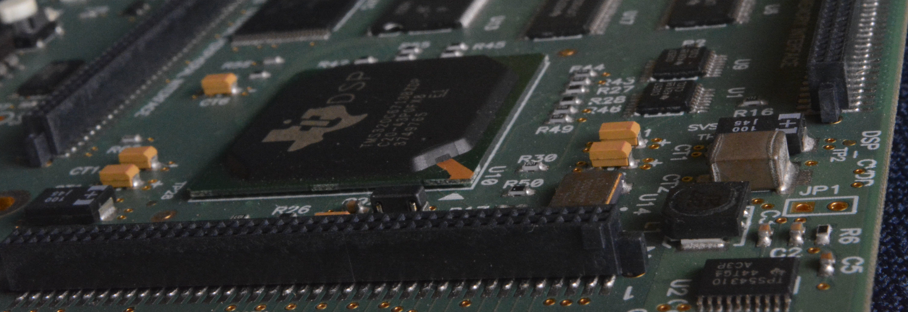

Student Accommodation

There is a Boys’ hostel which can accommodate 680 students and a Girls’ hostel which can accommodate 170 students. Students will either be in a double room with
toilet facilities shared among 8 double rooms, or in smaller double rooms with a double-decker bed, but with an attached bathroom. Each hostel has a common Dining
Space, Recreation room and manned with 24x7 security and backed with 24-hour power backup supply, lift-service and high-speed internet connection.
Campus-Network

IIITG provides 24x7 campus wide connectivity to its community. On campus, students can access high-speed (1 Gbps) LAN and Wi-fi. IIITG is part of National
Knowledge Network (NKN), which ensures 1 Gbps connection.
Library

The IIITG library is stocked with a good number of books and online journals to cater to the needs of the students, research scholars and faculty members of IIITG.
The Library currently has 1,214 printed volume of Books and subscribes to the IEEE, ACM and JSTOR e-journal packages through which the users can get access to
218 journals (approx.) and 3698 conference proceedings (approx.). Users can access these online resources in their electronic devices i.e. laptops, tablets etc. since the
library is Wi-Fi enabled. The library has a spacious and well-lit reading room. It fosters an atmosphere for academic learning and ensures a decorum of discipline, so that
the students can concentrate their entire focus on learning.
Laboratories

Labs are of immense importance to study core engineering subjects like computer science or electronics and communication. At IIITG, the labs are well equipped with
state-of-the art equipment and latest hi-tech gadgets. The lab assistants are experienced and guide the students with competence through both curriculum and
research work. Our labs foster an atmosphere of independent research under the guidance of instructors. Further, students are allowed to perform experiments individually
or in a group of two.
Financial Assistance
We provide a number of assistantship to regular Ph.D. scholars only.
Several education loans provided by different banks for pursuing higher education are available. The Department of Higher Education, Ministry of Human Resource
Development, Govt. of India has set up the Vidya Lakshmi portal for students to apply for educational loans and take a look at the various schemes provided by different
banks. It provides a single window for students to access information and apply for Educational Loans provided by banks and Govt Scholarships. More information can be found
for education loan by clicking here.
Dining and Mess
There are mess facilities in the hostels as well as at college. Canteens provide students with fresh and nutritious food. They cater to the need of both vegetarian and non-vegetarian
students. There are appropriate and fixed timings for dining in hostels.


 IIIT Guwahati,Bongora, Guwahati -781015
IIIT Guwahati,Bongora, Guwahati -781015